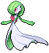
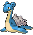

-
Ralts #280

- Psíquico
- Fada
Ralts sente as emoções das pessoas usando seus chifres. Esse Pokémon raramente aparece para as pessoas. Quando isso acontece, ele se aproxima se perceber que a pessoa tem uma disposição positiva.
-
Kirlia #281

- Psíquico
- Fada
Dizem que uma Kirlia que está exposta às emoções positivas do seu treinador se torna algo muito bonito. Este Pokémon controla seus poderes psicocinéticos com seu cérebro altamente desenvolvido.
-
Gardevoir #282
- Psíquico
- Fada
Gardevoir tem a capacidade de ler o futuro. Se o seu treinador estiver em perigo, este Pokémon usa todo o seu poder psicocinético para defendê-lo.
-
Jigllypuff #039

- Normal
- Fada
Este Pokémon usa sua habilidade de cantar precisamente em determinadas frequências para deixar seus adversários tontos, as vezes até em sono profundo.
-
Wigglytuff #040

- Normal
- Fada
Wigglytuff tem grandes olhos arredondados. A superfície de seus olhos estão sempre cobertos com uma camada fina de lágrimas. Se qualquer poeira encostar em seus olhos, é rapidamente removido pelo líquido.
-
Lapras #131
- Água
- Gelo
Á noite, diz-se que este Pokémon canta melancolicamente, enquanto busca o pouco outros de sua espécie ainda permanecem. Sua alta inteligência permite compreender a fala humana.
-
Pichu #172

- Elétrico
Pichu é um pequeno roedor amarelo. Suas orelhas, pescoço e cauda são pretas. As bochechas cor de rosa de Pichu pode armazenar pequenas quantidades de eletricidade.
-
Eevee #133

- Normal
Eevee tem uma composição genética instável que sofre uma mutação repentina devido ao ambiente em que vive. A radiação de várias pedras evolutivas do mundo Pokémon faz com que este Pokémon evolua em várias formas e tipos.
-
Espeon #196

- Psíquico
Espeon tem pele lilás, orelhas grandes e possue longos tufos de pêlo abaixo deles, uma gema vermelha em sua testa e um par de olhos pupiless com íris brancas e roxa escleras.Espeon são muito leais a seus treinadores e irá protegê-los de danos. Eles gostam de se aquecer em pleno sol.
-
Umbreon #197

- Sombrio
Este Pokémon tem toda a sua pele negra, com exceção de círculos amarelos em seu corpo, que podem ser iluminados a vontade. Ele se parece com uma raposa negra, com olhos vermelhos, e brilhantes no escuro. As Diferenças de Gênero